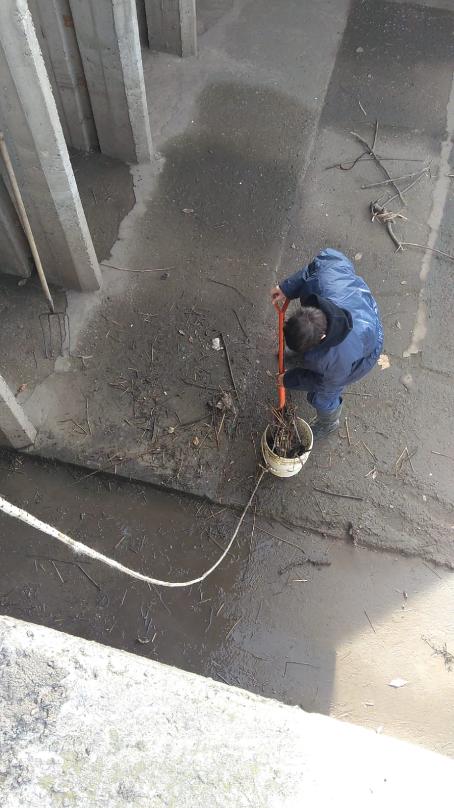

04/06/2023
Llega el tráiler de castración y vacunación Gratuita a La Emilia
DELEGACION MUNICIPAL.Del Miércoles 7 al viernes 9 de Junio el Tráiler Municipal de Castración y Vacunación gratuita llegará a nuestra ciudad. A partir de las 8:00 de la mañana comenzarán a anotarse los turnos a todas aquellas personas que estén con el animal por orden de llegada. El tráiler estará ubicado en la puerta de la Delegación Municipal (Eraclio Ferreira 308) y se entregarán doce (12) turnos por día.
Los requisitos para poder realizar las castraciones son:
* Llevar tu mascota con 12 hs. de ayuno * Los perros deberán ir con collar y correa y los gatos en una mochila o bolsa respirable bien cerrada * Deberán llevar un abrigo o manta para el post Operatorio La vacunación contra la rabia también se aplicará de manera gratuita y se realiza de 8:00 a 12:00 hs.
03/06/2023
Festejos del 25 de mayo en la Escuela Media N° 8
TRANQUERA ABIERTA.El jueves 1 de Junio se realizaron en la escuela Media N° 8 los festejos correspondientes para celebrar el 25 de mayo. EL grupo de danzas tradicionales “Tranquera abierta” participó de dichos festejos y se presentó en el día de ayer en las instalaciones de la Escuela realizando diferentes danzas.
El grupo de Danzas Tradicionales “Tranquera Abierta” participó en los festejos por el 25 de mayo realizados en la Escuela Media N° 8 de nuestra localidad. En su presentación realizaron un gato patriótico, que es una danza de galanteo de pareja suelta e independiente y lleva en su texto saludos a la naciente patria. También presentaron un gato escondido, danza folclórica típica de nuestro país que tuvo como influencia los ritmos picarescos que se irradiaban desde el norte Argentino a casi toda el área de América del Sur bajo la influencia española. Por último, y para cerrar el cuadro, los bailarines de Tranquera abierta realizaron una chacarera larga. En dicha danza, se agrega una copla más, precedida del interludio antes del ¡Aura!, con lo que se amplía la coreografía en una vuelta entera y un zapateo y zarandeo más.
26/05/2023
Semana de muchas actividades en la Escuela Técnica N° 5
TÉCNICA 5.Alumnos y profesores de la Escuela de Educación Media N° 5 de nuestra ciudad siguen sumando actividades y propuestas que van realizando semana a semana en las instalaciones de la institución y también fuera de ella.
En ésta oportunidad, en el marco de la formación de los futuros técnicos, alumnos de 6to y 7mo año realizaron la
semana pasada, visitas educativas a las empresas Termium y Profertil., con el fin de fortalecer la formación técnica,
e ir forjando el futuro de nuestros técnicos.
Por otro lado, la escuela se encuentra trabajando en proyectos que buscan fortalecer la formación general de los
alumnos, “la cultura es parte del aprendizaje y en este caso la Materia Música es la que se destacó esta vez."
–Comentó Juan Carlos Borras, director del establecimiento educativo- Es así que el profesor José Luis Sola se puso a
trabajar en éste proyecto junto a los chicos y están construyendo cajones peruanos-flamencos.” –Agregó-
Por último, durante la semana pasada en el marco de las Practicas Profesionalizantes de los alumnos de 7mo año
sumamos un grupo de alumnos que se encuentra haciendo sus prácticas en la Escuela N 18. “Un orgullo que nuestros
alumnos sean capacitadores y fortalezcan no solo los lazos entre las Instituciones sino además poder demostrar todo
lo que aprenden. Es por eso que agradecemos a la Directora de la escuela, Laura González y a su equipo por
recibirnos” –Destacó Borrás-
03/06/2023
Actividades para celebrar el día de los jardines realizadas en el Jardín de Infantes 904.

JARDÍN 904.Durante la semana pasada el Jardín de Infantes 904 “Lola Úbeda”, realizo diferentes actividades para celebrar junto a las familias el día de los Jardines. Directivos y docentes del jardín organizaron una gran variedad de actividades para festejar. Del 29 de mayo al 2 de Junio familias, alumnos y docentes celebraron con una gran variedad de propuestas.
Los niños y niñas del jardín acompañados por sus señoritas estuvieron de recorrida por el barrio para llevar carteles
y trabajitos a diferentes locales e instituciones de nuestra ciudad. Además, decoraron y vistieron de fiesta las
instalaciones del Jardín.
También, en el marco de los festejos, recibieron un espectáculo de teatro, música y circo brindado por el grupo
“El Círcolo”, a cargo del artista nicoleño Oscar Pérez. Y por último, celebraron acompañados de las familias realizando
diferentes estaciones de juegos y compartiendo desayunos y meriendas.
03/06/2023
Alumnos de la Escuela Técnica N° 5 salieron campeones de los Torneos Ternium Siderar

TÉCNICA 5.En el marco de los 26 años de la realización de los Torneos Ternium Siderar, alumnos de la Escuela Técnica N°5 de nuestra ciudad, se consagraron campeones en la disciplina futbol categoría Menores. Esta actividad convoca a todas las escuelas del distrito y participan unos 18.000 alumnos.
Este programa desarrollado junto a los Centros de Educación Física de San Nicolás, Ramallo y Ensenada, convoca cada
año a la totalidad de las escuelas secundarias del distrito y durante dos meses, los alumnos se enfrentan en
competencias deportivas de diferentes disciplinas. Este año, alumnos de la Escuela Técnica N°5 se llevaron el primer puesto en Futbol Menores, consagrándose campeones de
esta categoría.
Dicha propuesta pretende educar en el deporte, inculcando valores para el crecimiento personal y alentando a su vez la
permanencia de los alumnos dentro del sistema educativo y la práctica del deporte dentro y fuera del ámbito escolar.
Con el objetivo de promover el deporte entre alumnos secundarios, los Torneos Intercolegiales Ternium Siderar son un
clásico de San Nicolás y Ramallo, el deporte se convierte en una fiesta que todos disfrutan y celebran y las escuelas
participantes en el Torneo, son premiadas con materiales didácticos para desarrollar las clases de Educación Física.
03/06/2023
Feria de Ciencias en la Escuela N° 18 de nuestra ciudad

EP N°18.Durante la semana pasada se llevó a cabo en la Escuela de Educación Primaria N° 18 de nuestra localidad, la Feria de Ciencias de la que participaron alumnos de Segundo Ciclo y de Primer año. El lunes se realizará el cierre con la participación de Segundo y Tercer año.
El día viernes se realizó en la Escuela de Educación Primaria N° 18 la tradicional Feria de Ciencias en donde los
alumnos de los diferentes años expusieron sus trabajos realizados.
Familiares de los niños y alumnos del Jardín 904 visitaron la Feria recorriendo cada uno de los stands repletos de
trabajos realizados por los alumnos de Primero y segundo Ciclo.
El lunes 5 de junio de 14:30 a 16:30 se realizará el cierre de la Feria con la presentación de los trabajos realizados
por alumnos de Segundo y Tercer año.
02/06/2023
Asamblea General Ordinaria de la Cooperativa de Agua Potable de La Emilia

COOPERATIVA DE AGUA POTABLE LA EMILIA.La cooperativa de Agua potable de La Emilia convoca a Asamblea General Ordinaria, para éste sábado 3 de Junio a las 14:00 Hs según lo dispuesto por el artículo 31 del estatuto, artículos 47 y 48 de la ley 20337, que tendrá lugar en el predio del Jardín de Infantes N° 904 “Lola Úbeda”, situado en calle Alberto González 277 de la localidad de La Emilia, partido de san Nicolás.
En dicha asamblea se votará la renovación de la comisión directiva con la presentación de dos listas, Lista oficial y
Lista Blanca.
La lista oficial está integrada por: Fernández Raúl, Ale Enzo Cariaco, Lete Miguel, Gallo Juan y Pesci Pablo.
Por su parte, la lista blanca está integrada por: Manfredi Mario, Casadedio Rubén, Campanelli José, Migliaro María
Fernanda y Barcala Walter.
02/06/2023
Cronograma de actividades deportivas para este fin de semana
CSYDLE. Se viene un fin de semana movidito en lo que se refiere a actividades deportivas para el Club Social y Deportivo La Emilia. Este fin de semana se llevará a cabo una mueva fecha de los torneos de básquet y futbol. Además las categorías U13, U15 y U17 participarán de un torneo regional.
CRONOGRAMA DE ACTIVIDADES
Viernes 2 de junio
BASQUET
La Emilia vs Don Bosco
21:00 Hs. Sub 19
Sede: CSYDLE
Sábado 3 de junio
TRIANGULAR DE BASQUET SUB 15
12:00 Hs. La Emilia vs Belgrano
14:30 Hs. Defensores vs perdedor p1
17:00 Hs. Defensores vs ganador p1
PRIMERA FEMENINA DE BASQUET
19:30 Hs. La Emilia vs Los Andes
Sede: CSYDLE
FUTBOL
Regatas Naranja vs La Emilia
10:00 Hs. 9na
11:00 Hs. 8va
12:00 Hs. 7ma
13:10 Hs. 6ta
14:30 Hs. 5ta
Sede: Regatas Prado Español
Domingo 4 de junio
CUADRANGULAR DE BASQUET SUB 13
10:00 Hs. Somisa vs La Emilia
12:00 Hs. Sacachispas vs Defensores
15:00 Hs. Perdedor p1 vs Perdedor p2
17:00 Hs. Ganador p1 vs Ganador p2
Sede: Sacachispas - Villa Constitución
Domingo 4 de junio
TRIANGULAR DE BASQUET SUB 17
10:00 Hs. Belgrano vs Sportivo Rojas
1315 Hs. La Emilia vs Perdedor p1
16:30 Hs.La Emilia vs Ganador p1
Sede: CSYDLE
FUTBOL DE INFERIORES
La Emilia vs Social
10:30 Hs. Cat. 2012
11:20 Hs. Cat. 2013
12:10 Hs. Cat. 2016
13:00 Hs. Cat. 2015
13:50 Hs. Cat. 2014
Lunes 5 de junio
BASQUET FEMENINO
Social vs La Emilia
20:00 Hs. Sub 14
Sede: Social Ramallo
30/05/2023
Limpieza de compuertas y bocas de tormenta
FODIEM.El encargado de la planta de bombeo de la Emilia Miguel Ángel Ponzanesi en conjunto con los operarios de la planta, estuvieron realizando en el día de ayer la limpieza correspondiente en todas las compuertas y bocas de tormenta que se encuentran a lo largo del terraplén.
En el día de ayer personal de la planta de bombeo estuvo realizando tareas de limpieza en las bocas de tormenta y compuertas que se encuentran a lo largo del terraplén. “Esta es una tarea que se realiza cada vez que tenemos períodos de lluvia y en el caso de que no tengamos lluvias se hace cada 15 días. Es importante realizar este mantenimiento periódicamente para asegurarnos de que las compuertas estén despejadas de cualquier tipo de residuos que puedan venir a través de las bocas de tormenta.” – Comento Ponzanei- “También se realizó el control de las claquetas, estas claquetas tienen unas gomas que son las que en caso de que el arroyo crezca no permiten el ingreso del agua. Si bien es un trabajo rutinario es fundamental para el mantenimiento” –Agregó-
30/05/2023
Tareas de limpieza y mantenimiento en calle Alsina junto al terraplén

DELEGACION MUNICIPAL. En el día de ayer la Delegación Municipal de La Emilia llevo a cabo tareas de limpieza en la esquina de calle Alsina contra el terraplén, zona en la que se encuentra la salida de la primera boca de tormenta. Además, colocaron un cartel para recordar a la población que está prohibido tirar residuos en dicho espacio.
La delegación Municipal estuvo trabajando en el día de ayer haciendo tareas de limpieza y remoción de residuos en
toda la zona de calle Alsina que da junto al terraplén. Recordemos que en dicha zona se encuentra la primera boca de
tormenta y cualquier tipo de residuos termina obstruyendo la salida del agua proveniente del zanjón.
También, se coloco un cartel para recordar a la población que está terminantemente prohibido
arrojar basura en dicho lugar ya que es de suma importancia mantener este espacio despejado y limpio para que el agua
proveniente del zanjón desagote sin inconvenientes.
29/05/2023
Nuevo horario de clases para la Escuela de Danzas Tradicionales “Tranquera abierta”
TRANQUERA ABIERTA.La escuela de danzas tradicionales “Tranquera abierta funcionará en nuevos días y horarios. Desde hoy, las clases serán dictadas los Lunes y miércoles 20 hs. en la Escuela Técnica N° 5 de nuestra ciudad.
La Escuela de danzas tradicionales Tranquera abierta, dictará sus clases en nuevos días y horarios, a partir de hoy, se desarrollarán los días lunes y miércoles a las 20 hs. La formación en la escuela de danzas tradicionales está destinada a alumnos de 15 años en adelante y se lleva a cabo en la escuela Técnica N° 5.
28/05/2023
Hoy 28 de mayo día de los jardines de infantes

JARDÍN 904.Hoy 28 de mayo se festeja el día de los jardines de infantes y la maestra jardinera en honor a Rosario Vera Peñaloza quien fue la primera maestra jardinera.
Rosario Vera Peñaloza nació en Atiles, provincia de La Rioja, en 1873. Fue paradigma de la docencia, recorrió en su
carrera todos los estamentos del rol: maestra jardinera, docente de grado, profesora, directora, supervisora,
inspectora, fundadora de institutos educativos y capacitadora pedagógica en enseñanza primaria y media, tanto pública
y privada.
Se ubicó en un encuadre positivista de la tarea, planteó una perspectiva conceptual de “Círculos Concéntricos” con
eje en la Geografía, tomando como referente la presencia del hombre en la naturaleza, enfoque que se despliega
en la obra de Joaquín V. González. Formó parte de la corriente pedagógica de la “Escuela Nueva” surgida en las
Escuelas Normales.
Participó en el armado del Instituto Bernasconi desde su inauguración en 1929 hasta 1947, ocupándose de diseñar y c
onformar el Primer Museo para la Escuela Primaria.
Recorrió el país investigando su geografía y el hábitat humano, recogiendo en su periplo material fotográfico
que documenta aspectos geográficos, históricos y sociales. Desarrolló un concepto de nación de raigambre popular,
rescatando la tradición criolla y de los pueblos originarios. Con la creación del Primer Museo para la Escuela
Primaria, Rosario materializó su ideario pedagógico y político.
Murió el 28 de mayo de 1950, fecha que se toma para conmemorar el "Día de la Maestra Jardinera" y el
"Día de los Jardines de Infantes".
Por tal motivo, desde el jardín 904 de La Emilia saludan a toda la comunidad educativa que forman parte de
la institucion.
27/05/2023
Refacciones y mejoras en la Escuela de Educación Secundaria Técnica N° 5 de La Emilia

TECNICA 5. La EEST N°5 de La Emilia se encuentra realizando refacciones y mejoras edilicias en la institución con el fin de brindar cada día mejores espacios de trabajo y de formación para toda la comunidad educativa. D ichas reformas se encuentran enmarcadas en un proyecto institucional que busca mejorar las condiciones edilicias del establecimiento educativo.
Dicho proyecto se viene realizando en diferentes etapas mediante las cuales en la nave del taller han realizado el re-pintado de las sendas de seguridad con la ayuda de la Cooperativa de Agua potable de La Emilia quien les dono la pintura. “Los profesores se pusieron la tarea al hombro” –Aseguró Juan Carlos Borras- director del establecimiento. “Por otro lado con una gran mano que nos dio la Cooperativa Eléctrica hemos renovado por completo la instalación eléctrica de una de las alas de la escuela donde los profesores de Taller fueron quienes con gran esfuerzo lo llevaron a delante.” -Agrego Borras- “Para finalizar hemos renovado por completo el área de soldadura con un gran esfuerzo de nuestra Cooperadora Escolar. -Concluyo-
26/05/2023
Pusieron en marcha las bombas de desagote en la planta de bombeo

FODIEM.El encargado de la planta de bombeo de La Emilia, Miguel Ángel Ponzanesi, en conjunto con los operarios de la planta, pusieron en marcha las bombas de desagote como método de prueba y mantenimiento de las mismas.
Aprovechando el caudal de agua que se logró juntar en el reservorio luego de una considerable cantidad de lluvia caída en
estos últimos días, el encargado de la planta de bombeo aprovecho para probar y realizar el mantenimiento correspondiente
de las bombas de agua.
“El miércoles que comenzó la lluvia, cerramos las compuertas para poder juntar agua y hacer el mantenimiento
correspondiente de las bombas” –comento Miguel Ángel Ponzanesi-.
Según los datos recogidos a través del pluviómetro ubicado en la planta de bombeo ,el registro de lluvia caída durante
los días 24, 25 y 26 de mayo fue de un total de 48 mm, número que brindo la posibilidad de realizar las pruebas p
ertinentes para el mantenimiento de las bombas. Recordemos que durante el mes de mayo el agua caída en La Emilia fue de
127,5 mm.
26/05/2023
Té con entretenimientos en el Sum del Jardín 904 de La Emilia

JARDÍN 904.El sábado 10 de Junio a las 15:00 hs se realizará en el Sum del Jardín 904 de La Emilia un té con entretenimientos organizado por la Asociación cooperadora del Jardín.
La Asociación cooperadora invita a la población a compartir una tarde de té con diversión y sorpresas, se solicita además a los asistentes llevar taza, equipo de mate, lapicera y por supuesto muchas ganas de divertirse. El costo de la entrada es de $500
26/05/2023
Villa Constitución se consagró campeón del torneo de “Mamis Voley” en La Emilia

CSYDLE.En el día de ayer, se llevó cabo en las instalaciones del Club Social y Deportivo La Emilia, un torneo de “mamis Voley” del que participaron junto a dos equipos emilianos 6 equipos más provenientes de localidades vecinas. El equipo de Villa Constitución fue quien se consagró campeón del torneo.
El jueves 25 de mayo desde las 9:30 hs se desarrolló en el gimnasio del Club Social y Deportivo La Emilia un torneo de
“mamis vóley” que convocó a diferentes equipos de la zona. Entre ellos participaron equipos de Rojo, V
illa Constitución, Sánchez, Pérez Millán, San Nicolás y La Emilia que presentó dos equipos.
La final del torneo fue disputada entre Pérez Millán y Villa Constitución, consagrándose este último campeón de dicho
torneo.
26/05/2023
Acto del 25 de mayo en el Jardín 904 de La Emilia

JARDIN 904.El miércoles 24 de mayo se realizó en el sum del Jardín de Infantes 904 de La Emilia el acto por la celebración del 213 aniversario de la formación de nuestro primer gobierno patrio. Primero se llevó a cabo el acto formal y luego se realizaron juegos tradicionales de la época de 1810 con las familias.
25/05/2023
Torneo de "Mamis voley" en el Club Social y Deportivo La Emilia

CSYDLE. Este jueves 25 de mayo se llevará cabo en las instalaciones del Club Social y Deportivo La Emilia, un torneo de vóley en el que participará el equipo de “mamis Voley” de La Emilia junto a otros 6 equipos provenientes de diferentes localidades vecinas.
El jueves 25 de mayo desde las 9:30 hs se desarrollará en el gimnasio del Club Social y Deportivo La Emilia el torneo de “mamis vóley” que convoca a diferentes equipos de la zona. Entre ellos participarán equipos de Rojo, Villa Constitución, Sánchez, Pérez Millán, San Nicolás y La Emilia que presentará dos equipos.